地政学
アンタナナリボは島の中央高地にある首都で、海港ではなく道路と行政で国土を束ねます。沿岸、鉱山、農村、観光地から人と物が集まり、内陸の丘が国家の判断と不満を受け止める舞台になる都市です。国土を映す首都です。
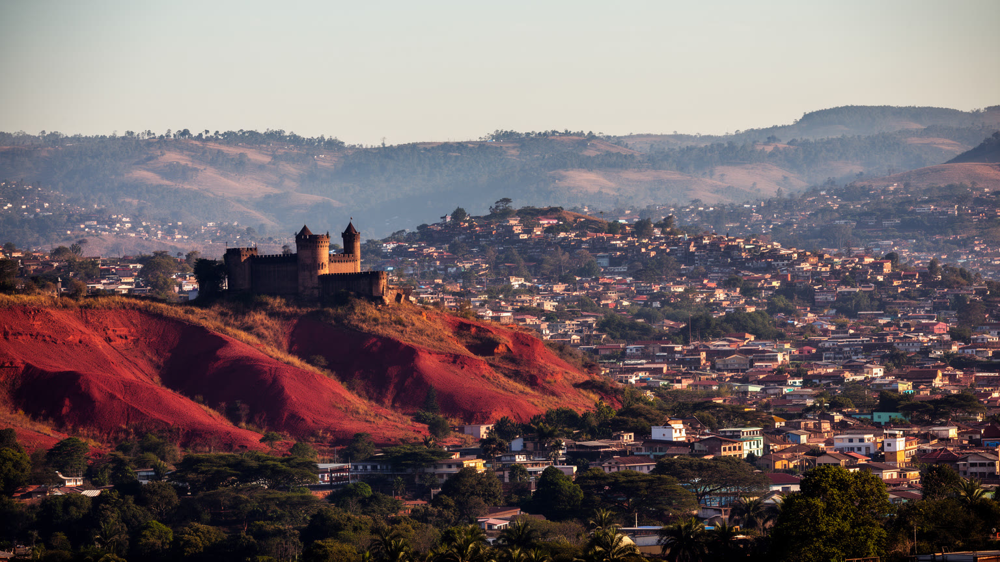
🇲🇬 マダガスカル / アナラマンガ地方 / World City Atlas
中央高地の丘に広がるマダガスカルの首都です。メリナ王国のロヴァ、国の行政、市場、繊維産業、教会、学校、渋滞、斜面住宅、貧困、観光が、赤土の尾根と谷に重なります。
都市の骨格
アンタナナリボは海港を持たない高地の首都です。尾根の旧王都、谷の市場、郊外へ伸びる道路、斜面の住宅地が近接し、島の政治と物流を内陸から動かしています。
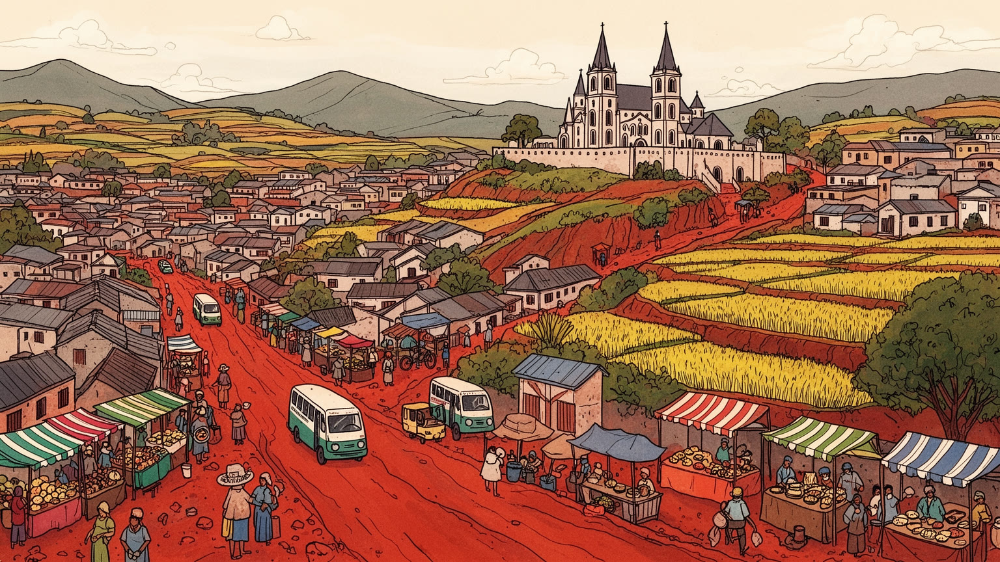
アンタナナリボは島の中央高地にある首都で、海港ではなく道路と行政で国土を束ねます。沿岸、鉱山、農村、観光地から人と物が集まり、内陸の丘が国家の判断と不満を受け止める舞台になる都市です。国土を映す首都です。
行政、学校、病院、繊維、食品加工、市場、建設、交通、家事労働が雇用を支えます。輸出加工区と非公式商業は遠い市場と日々の現金を結び、若者の仕事探しも街の大きな課題になる都市です。課題が続く場所です。
メリナ王国の記憶、ロヴァ、祖先祭祀、プロテスタントとカトリック、音楽、語り、家族儀礼が重なります。教会の鐘、市場の言葉、丘の墓地が、首都の公共性を日常から形づくる都市です。祈りも今も深く続く街です。
旅行者はロヴァ、旧市街、市場、工芸、郊外の丘へ向かうが、住民は渋滞、水、住宅、学校、物価、洪水と向き合います。眺望の美しい丘は、観光の背景である前に生活の急斜面でもある都市です。続いている場所です。
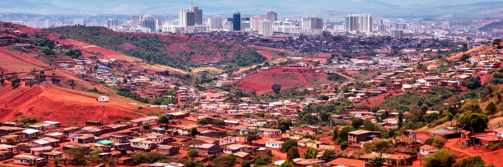
アンタナナリボは港湾都市ではなく、マダガスカル中央高地の尾根と谷に築かれた首都です。この位置は、島国の政治を読むうえで重要です。輸入品、燃料、輸出作物、観光客の多くは沿岸の港や空港を通るが、制度、許認可、大学、医療、報道、金融の判断は高地の首都へ集まります。海から離れた地形は、物流費と道路の脆さを都市の生活費へ変える一方、涼しい気候と歴史的な王都の威信を与えました。丘の上には王宮や古い教会があり、谷には市場、バスターミナル、工場、低地の住宅地が広がります。行政の中心と日常の混雑が近すぎるほど重なるため、国家の課題は抽象的な政策ではなく、道路の渋滞、水の不足、学校の混雑、斜面の危険として街に現れます。アンタナナリボを見る時は、国土の真ん中に点を置くだけでは足りません。東西南北の地域差、沿岸との距離、港へ向かう道路、農村から来る若者、地方政治の不満が、この丘の首都へ流れ込む構造を読む必要があります。高地の静かな眺望は、島全体を統治する難しさの上に成り立っています。さらに中央高地の優位は、地方から見れば距離と権力の集中でもあります。道路が切れれば首都の店頭価格が変わり、地方の不作は都市の米価を揺らし、政治の混乱は地方行政まで波及します。丘の首都は国土を見渡す場所であると同時に、国土から問われ続ける場所でもある続いています。
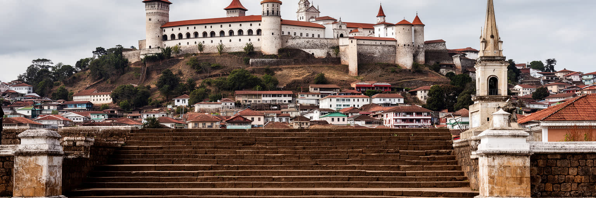
アンタナナリボの中心には、メリナ王国の王都としての記憶が強く残ります。丘上のロヴァは、単なる観光名所ではなく、島の統合、王権、植民地支配、独立後の国家形成を重ねて考える場所です。都市名が示す「千の町」という物語も、軍事、儀礼、祖先、丘の防御性を含んでいます。王宮の周辺を歩くと、石段、教会、古い住宅、墓地、眺望が連なり、政治権力が都市の地形と結びついていたことが分かります。植民地期にはフランスの行政が王都の上に重なり、独立後も国家の象徴として再解釈されました。火災や修復を経たロヴァは、失われたものをどう記憶し直すかという問いも抱えます。王国史を民族的な誇りだけで語ると、マダガスカルの多様な地域や民族の経験を見落とします。ですがロヴァを無視すれば、首都がなぜこの丘にあり、なぜ人々がそこへ特別な感情を持つのかも分からありません。アンタナナリボの歴史は、王権、植民地、共和国が同じ尾根を使い直してきた歴史であり、その重なりが現在の公共空間に厚みを与えています。王都の遺産を保存することは、石造建築を修理するだけではありません。語り手、学校、地域の儀礼、観光ガイド、周辺住民の生活を結び、だれの歴史として説明するかを考える作業です。首都の記憶は誇りであると同時に、地域間の関係を丁寧に扱う責任でもあります。その視点が遺産を生かす道になります。
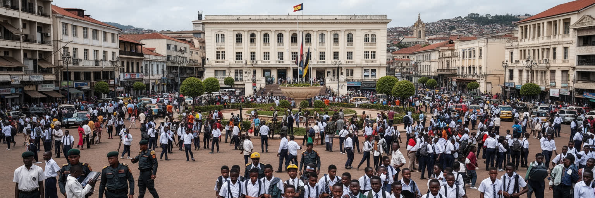
アンタナナリボは大統領府、官庁、議会、裁判所、政党、報道、大学、国際機関の窓口が集まる政治都市です。だから街路は通勤や商売の場所であると同時に、抗議、選挙、警備、式典、権力交代の記憶を抱える舞台にもなります。マダガスカルの政治は、地方の貧困、資源開発、農業、教育、電力、物価、外国投資、汚職への不信と切り離せません。そうした不満は、首都の広場や大学、幹線道路に集まりやすいです。政治危機のたびに、首都が国全体を代表しているのか、それとも高地の中心が地方の声を吸い上げ切れていないのかが問われてきました。官庁街の近くで市場が動き、学生が議論し、バスが渋滞し、住民が水を運ぶことは、制度と生活の距離が短いことを示しています。アンタナナリボの政治性は、建物の威厳だけでなく、街路を使う人々の緊張に現れます。民主主義の形は投票日だけでなく、新聞、ラジオ、教会、家族の会話、大学の掲示、デモへの参加や沈黙の選択として日常に染み込みます。首都は国家を代表する場所であるほど、国家への不満を最も直接に受け止める場所にもなります。政治の不安定さは投資や雇用にも影響し、若者の将来設計を揺らします。警備の強化や道路封鎖は一時的な秩序を作りますが、物価、教育、電力、汚職への不信が残れば、同じ街路に再び不満が戻ります。首都の安定は、広場を静かにすることだけでは保てありません。
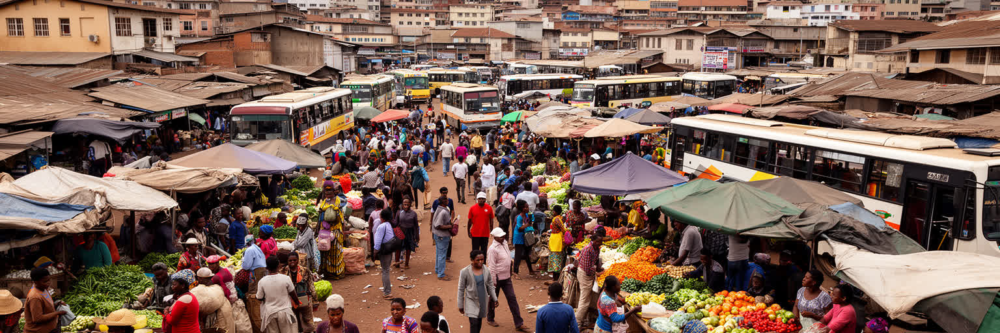
アンタナナリボの経済を理解するには、企業や官庁だけでなく、市場、露店、バス乗り場、路上の修理、家内労働、食品販売を見る必要があります。アナラケリ周辺の市場や坂道の小さな店では、米、野菜、肉、衣料、携帯用品、古着、文具、調理済みの食べ物が日々動き、住民の現金収入と食卓を結びつけます。非公式な仕事は税や社会保障の外に置かれやすいが、都市の生活を支える柔軟な仕組みでもあります。女性商人、若い運搬人、バスの補助者、手工業者、家事労働者は、景気、天候、通貨、燃料価格の変化をすぐに受けます。市場は単に安く買う場所ではなく、信用、親族、地方からの仕入れ、情報交換、政治的な噂が交わる公共空間です。衛生、保管、排水、火災、警備、賃料、立ち退きの問題は、売り手の生活に直結します。近代的な商業施設が増えても、多くの家庭にとって市場の細かな売買は欠かせません。アンタナナリボの都市経済は、大きな統計に表れにくい小さな仕事の密度で成り立っています。市場を整える政策は、景観の整理ではなく、働く人の権利と生活費を守る政策でもあります。米価が上がれば昼食の量が変わり、燃料が上がれば運搬賃も店先の価格も変わります。市場は農村、港、為替、家計を一つの場所で結び直す装置であり、そこで働く人の安全を守ることは都市全体の安定に関わる焦点です。続いています。
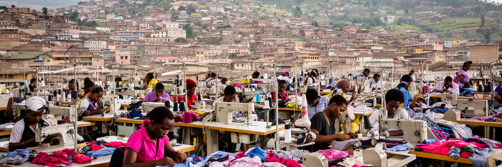
アンタナナリボ周辺の産業で重要なのは、行政サービスだけではありません。繊維、縫製、食品加工、建設、印刷、物流、修理、情報通信、教育、医療が都市の雇用を作り、輸出加工区は遠い消費市場と首都圏の賃金を結びつけます。縫製工場では多くの女性が働き、国際的な発注、為替、労働基準、納期の変化が日々の収入に影響します。安い労働力としてだけ見れば、働く人の通勤、保育、食費、健康、安全、組合の声が消えてしまいます。工場は雇用を生む一方、低賃金、長時間労働、交通費、雇用の不安定さも抱えます。食品加工や建設は地元市場に近く、農村からの材料や労働者に依存します。首都圏の産業は、港から遠い内陸であるため物流費に弱いが、人口、学校、行政、空港、道路の集中を生かせます。アンタナナリボの産業政策を考える時、投資誘致だけでなく、技能訓練、公共交通、労働保護、女性の安全、電力の安定、住宅との距離を見る必要があります。輸出用の服が世界へ向かう一方、労働者が渋滞の坂道を長く移動します。その落差に、都市経済の現実があります。停電や道路の遅れは工場の納期を崩し、家計には残業や交通費の形で跳ね返ります。技能を身につけても昇給や転職の道が狭ければ、都市の産業は人を育てる場所になりにくいです。雇用の質を上げることが、首都圏の競争力そのものになる大切な条件です。続いています。
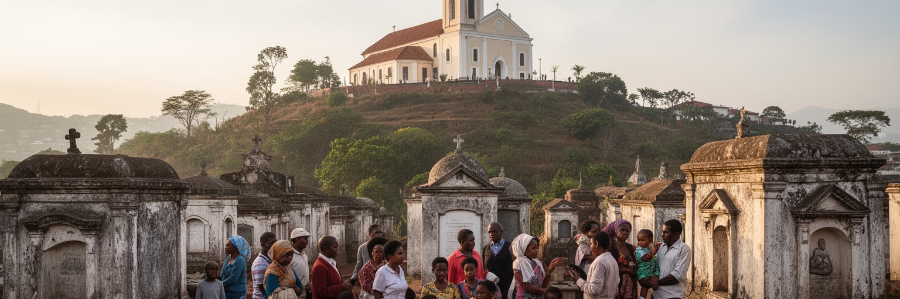
アンタナナリボの宗教生活は、教会の鐘、日曜礼拝、学校、家族の祈り、祖先への敬意、墓地の手入れ、ファマディハナのような再葬儀礼の記憶によって形づくられます。プロテスタントとカトリックは、植民地期以前からの王国史や教育とも深く結び、教会は信仰の場であるだけでなく、学校、福祉、政治的な発言、地域の相談窓口として機能してきました。祖先祭祀は古い習慣として片づけられありません。家族、土地、名前、墓、帰属を確認する仕組みであり、都市へ移った人にも出身地との関係を残します。首都では近代的な職場と家族儀礼が同じ生活の中にあり、給与、休暇、交通費、葬儀費用は宗教と経済をつなぐ現実的な問題になります。宗教は人を結びつける一方、世代差や教派差、費用負担をめぐる緊張も生みます。アンタナナリボを歩くと、丘の教会、墓地、学校、家族の集まりが都市のリズムを作っていることが分かります。信仰を観光的な異文化としてではなく、都市住民が不安、病、貧困、進学、移住、死を受け止める社会的な回路として読むことが大切です。祈りの場所は、首都の見えにくい安全網でもあります。家族儀礼は出身地とのつながりを維持し、都市で孤立しやすい若者にも帰属を与えます。一方で儀礼費用は低所得世帯に重く、親族間の期待が負担になることもあります。宗教と家族を読むことは、都市の連帯と圧力を同時に見ることでもあります。
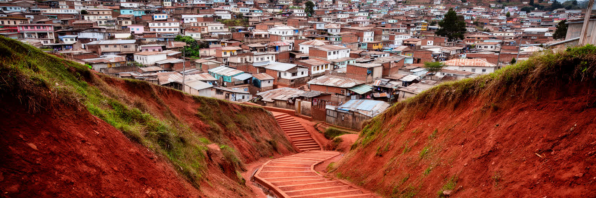
アンタナナリボの美しい眺望は、住民にとって日々の負担でもあります。丘の上の住宅地、急な階段、細い坂道、谷底の低地、湿地に近い地区が複雑に入り組み、住む場所によって水、排水、通学、通勤、災害リスクが大きく変わります。富裕層の住宅や大使館、ホテルが高い場所や便利な地区を使う一方、低所得世帯は斜面の不安定な土地や浸水しやすい谷に住まざるを得ないことがあります。家は家族の成長や収入に合わせて少しずつ増改築され、店先や庭は仕事場にもなります。雨季には排水路の詰まり、地滑り、冠水、ごみ、感染症が問題になり、乾季には水の確保やほこりが生活を変えます。住宅問題は単に戸数の不足ではなく、土地権利、公共交通、学校、診療所、市場、電力、水道、衛生の接続論点です。高地の涼しさは魅力ですが、標高差は移動の時間と体力を奪います。アンタナナリボの暮らしを読むには、遠景の美しさと足元のインフラを同時に見る必要があります。安全な階段、排水、街灯、公共トイレ、水場の整備は、小さく見えて都市の尊厳を支えます。土地の権利が不安定な地区では、住民が家を直したり商売へ投資したりしにくいです。斜面の住宅を危険としてだけ扱えば生活の場を失わせるため、移転、補強、公共サービスを丁寧に組み合わせる必要があります。住まいは都市政策の中心です。今もなお重要であり続ける続いています。
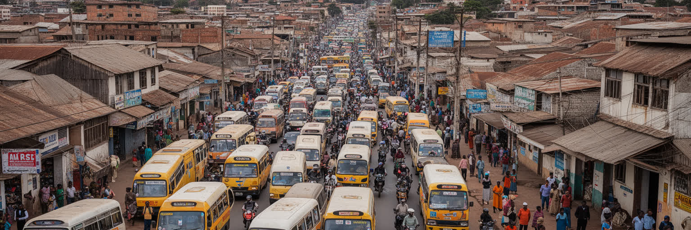
アンタナナリボの移動は、地図上の距離よりも坂、渋滞、道路幅、バスの乗り継ぎで測られます。中心部の谷や丘を結ぶ道路は限られ、朝夕にはミニバス、タクシー、バイク、徒歩、荷車、通学の人波が集中します。郊外へ住宅地と工場が広がるほど、移動時間は家計と労働条件の一部になります。港から遠い首都にとって、道路は生活物資、燃料、建材、食品、輸出品を運ぶ生命線でもあります。渋滞は単なる不便ではなく、物価、通勤疲労、大気汚染、救急搬送、学校の遅刻、工場の納期に影響します。公共交通を担う小型バスは安く柔軟ですが、混雑、安全、待ち時間、運転手の収入、燃料価格に左右されます。歩行者にとっては、歩道の狭さ、雨の日の泥、夜の暗さ、坂の急さが移動の壁になります。空港は国際接続を担うが、都市の大半の日常は地上の細い道路に依存しています。アンタナナリボの都市圏を改善するには、大規模道路だけでなく、バス停、歩道、排水、交通整理、郊外住宅の計画を一体で考える必要があります。移動の公平性は、誰が仕事や学校へ届けるかを決める都市の基本条件です。交通費が賃金に対して高ければ、仕事を選ぶ範囲は狭くなります。女性、子ども、高齢者にとって安全に歩ける道が少ないことも、都市参加の制約になります。移動の改善は経済政策であり、福祉政策でもある重要な都市の約束です。続いています。
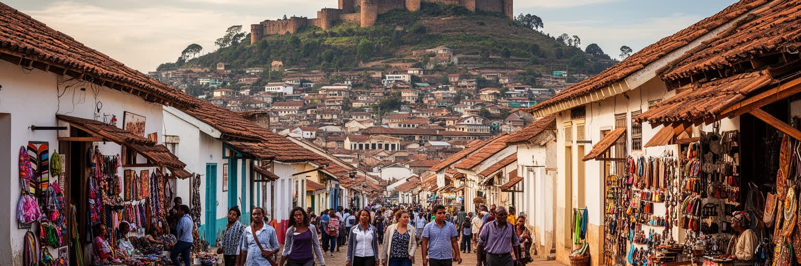
アンタナナリボ観光の魅力は、壮大な一つの名所よりも、丘の上の旧市街、ロヴァ、教会、市場、工芸店、湖、郊外の丘をゆっくりつなぐことにあります。旅行者は国際空港から島の自然保護区やビーチへ向かう途中で首都を通ることも多いが、この街を通過点にするとマダガスカルの政治と歴史を見落とします。ロヴァの修復、アンドハロ周辺の眺望、アナラケリの市場、手工芸、食堂、坂道の住宅地は、王国史、植民地、独立後の国家、日常の貧困を同時に見せます。観光収入はガイド、運転手、宿、飲食店、工芸職人を支える一方、治安への不安、交通、衛生、過度な撮影、貧困の見世物化という問題もあります。観光客に必要なのは、珍しい景色を消費する態度ではなく、都市の生活圏を尊重する姿勢です。歴史的建物を保存するには、修復費だけでなく、住民の生活、学校教育、地元の語り手、職人の仕事を結びつける必要があります。アンタナナリボの遺産は、王都の美しい記憶だけでなく、格差や政治の傷も含みます。だからこそ、丘を歩く旅は、島の多層的な歴史を学ぶ入口になります。観光が地元に残す利益を増やすには、短い通過滞在だけでなく、ガイド、宿泊、食、工芸、交通を地域の仕事へつなぐ設計がいます。安全と礼儀を守りながら歩ける都市は、住民にも旅行者にも使いやすい都市であるはずです。続いています。地域の力にもなります。
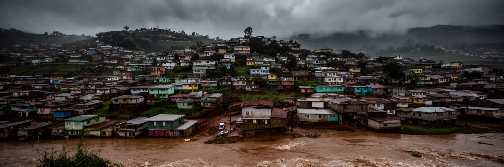
中央高地の涼しさはアンタナナリボの魅力ですが、雨季の豪雨、低地の冠水、斜面の崩れ、ごみと排水、感染症は都市の弱点でもあります。丘陵都市では、水は上から下へ一気に流れ、谷や湿地に住む低所得世帯ほど被害を受けやすいです。排水路がごみで詰まれば道路は泥に変わり、通学、通勤、救急搬送、市場の仕入れが止まります。気候変動はサイクロンや雨の偏りを強め、農村の収穫不安は食料価格を通じて首都にも及びます。大気汚染も無視できません。渋滞、古い車両、調理燃料、ほこりは、子どもや高齢者の健康に影響します。環境問題は自然保護区だけの話ではなく、都市の水、空気、ごみ、住宅地の安全に関わります。アンタナナリボで防災を考えることは、斜面に住む人を危険な場所から単に排除することではありません。土地、仕事、交通、学校へ届く場所を確保しながら、排水、補強、警報、避難、廃棄物管理を整える必要があります。美しい丘の都市を持続させるには、景観と暮らしの安全を同時に守る計画が欠かせません。気候リスクは、貧困とインフラ不足を通じて都市の不平等を広げます。水辺や低地をただ埋めれば雨水の逃げ場は減り、斜面を無秩序に開発すれば災害の危険は増します。緑地、湿地、排水路、ごみ収集を都市の基盤として扱うことが、将来の被害を小さくします。環境政策は生活保護でもある重要な備えです。続いています。
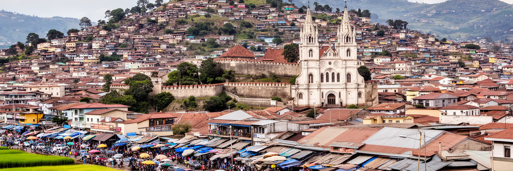
アンタナナリボを読むことは、マダガスカルを経済規模や観光の自然景観だけで見ないための入口になります。ここには中央高地の王都、共和国の行政、植民地の痕跡、教会、祖先儀礼、繊維工場、市場、坂道の住宅、渋滞、若者の仕事探し、雨季の洪水が同じ都市空間に重なります。数字で見れば国の所得水準は低く、市域の人口も世界の巨大都市ほどではありません。しかし首都には、島の政治、地方との不均衡、輸出産業、農村の食料、国際援助、観光、貧困、文化の記憶が集中します。丘から見える赤土の家並みは美しいですが、その美しさは水道、排水、学校、交通、土地権利、雇用の不足を隠すことがあります。ロヴァや旧市街を歩くと、歴史の重さが分かり、市場やバス停を歩くと、現在の生活の切迫が分かります。アンタナナリボの重要性は、華やかな高層ビルではなく、国家の象徴と住民の脆い暮らしが非常に近い距離で結びついている点にあります。首都を良くすることは、道路や建物を整えるだけでなく、若者、商人、工場労働者、斜面に住む家族が都市に残れる条件を作ることでもあります。行政、信仰、労働、観光、防災を別々に見るだけでは、この都市の緊張はつかめありません。丘の上の権威と谷の市場、世界へ出る輸出品と毎日の米、観光の眺望と雨季の危険を重ねて見ることで、アンタナナリボは島国の矛盾を映す首都として立ち上がります。